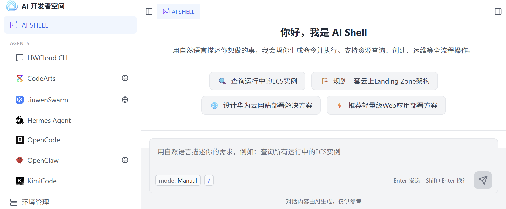
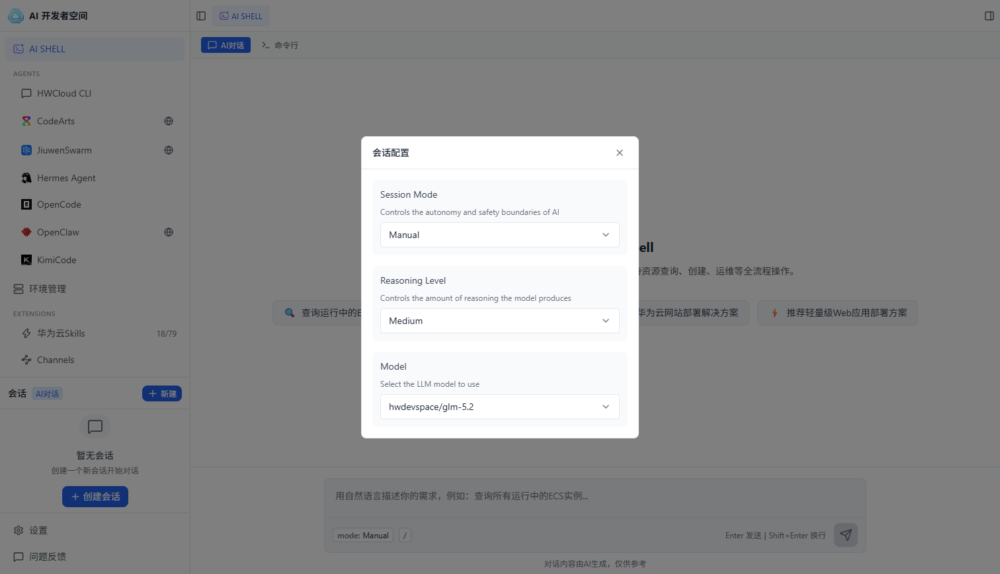
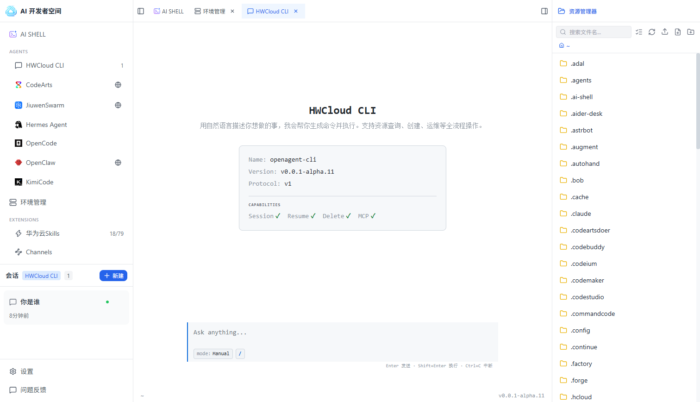
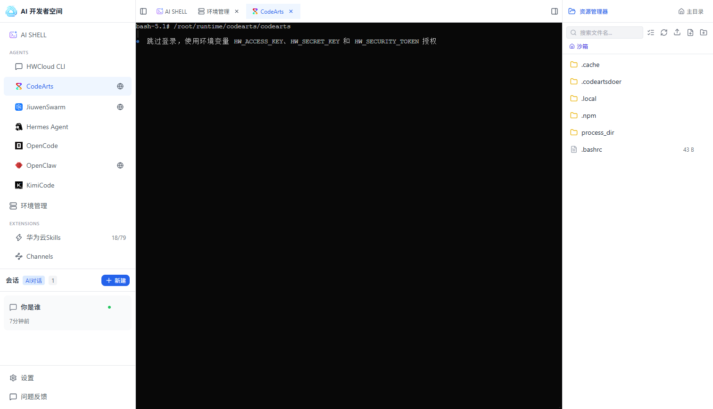
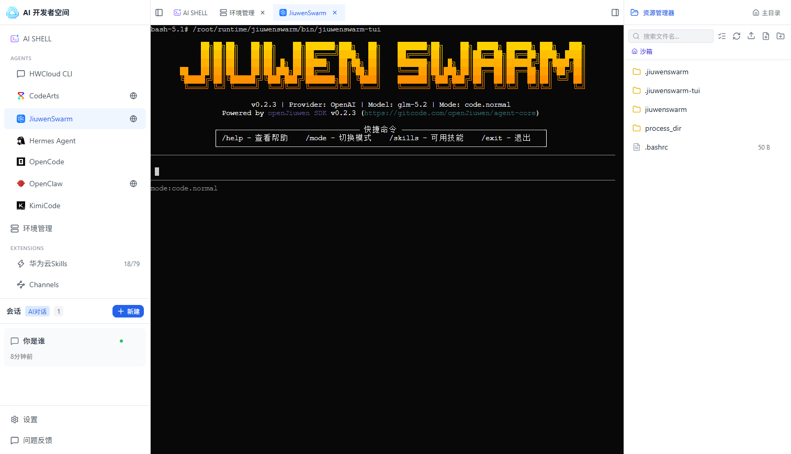
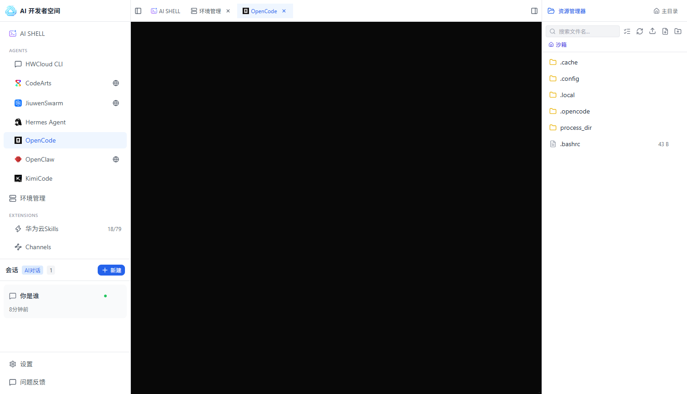
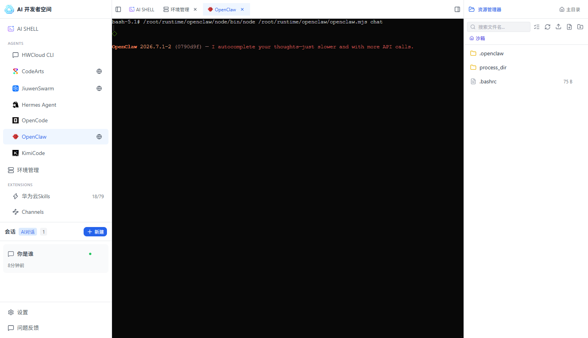
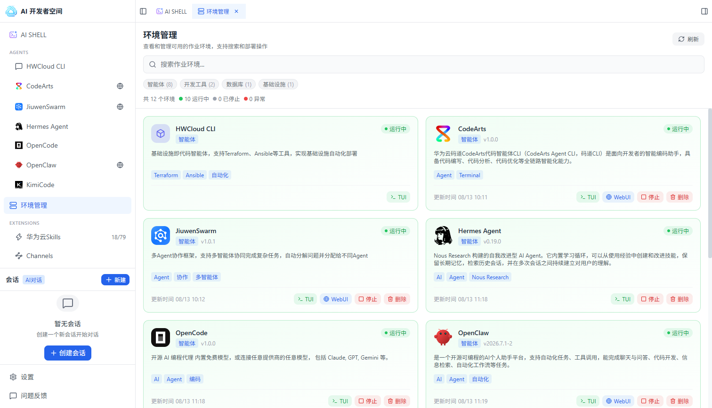

简介
AI 开发者空间是面向开发者的智能开发工作空间，以 AI SHELL 为主要入口，整合自然语言交互、命令行、Agents、开发环境、Skills、Channels、会话和文件管理等能力。开发者可用它辅助完成云资源查询与操作、代码和命令生成、环境部署及多工具协同，减少在不同工具之间切换的成本。
为什么需要 AI 开发者空间
在华为云上进行开发与运维时，开发者常遇到以下挑战：
- 云资源操作门槛高：ECS、CCE、OBS 等服务 API 与 CLI 命令繁多，学习成本高
- 自然语言到命令的转换难：想把想法落地为可执行的云操作命令，需要大量检索与试错
- 能力分散：代码智能体、多 Agent 协作、上下文数据库等工具散落各处
- 多平台集成繁琐：难以将 AI 能力接入飞书、微信、企业微信等消息平台
AI SHELL
AI SHELL 是产品的核心入口，提供两种交互模式：
| 模式 | 用途 | 说明 |
|---|---|---|
| AI 对话 | 自然语言交互 | 用自然语言描述需求，AI 生成命令并执行 |
| 命令行 | 命令式操作 | 面向熟悉 CLI 的开发者，直接输入命令 |
操作步骤：
- 点击左侧 AI SHELL，进入对话界面
- 在顶部切换「AI 对话」或「命令行」模式
- 点击输入框，用自然语言描述需求（例如"查询所有运行中的 ECS 实例"）并发送
- 点击「创建会话」或「新建」可开启新的对话

点击输入框左侧的 mode: Manual 按钮，可配置会话参数：
| 配置项 | 说明 | 示例 |
|---|---|---|
| Session Mode | 控制 AI 的自主性与安全边界 | Manual（手动确认执行） |
| Reasoning Level | 控制模型产生的推理量 | Medium（中等） |
| Model | 选择使用的 LLM 模型 | hwdevspace/glm-5.2 |

概览
AGENTS 模块默认展示 HWCloud CLI、CodeArts、JiuwenSwarm 智能体，根据部署的环境状态动态展示 Agent 入口， 目前可以提供 7 个智能体，覆盖代码生成、多 Agent 协作、基础设施即代码、个人助手等场景。
HWCloud CLI
HWCloud CLI 是基础设施即代码（IaC）智能体，支持 Terraform、Ansible 等工具，可将自然语言需求转换为可执行的基础设施配置。
操作步骤：
- 点击左侧菜单 HWCloud CLI，进入该智能体
- 用自然语言描述基础设施需求（例如"创建一个 VPC 和一个 ECS 实例"）
- HWCloud CLI 调用 Terraform / Ansible 等工具生成 IaC 脚本
- 确认脚本后执行部署，并查看运行结果

CodeArts
CodeArts 是华为云码道代码智能体 CLI，支持代码编写、分析与优化。
操作步骤：
- 点击左侧菜单 CodeArts，进入该智能体
- 在终端中输入代码编写、分析或优化需求
- CodeArts 生成代码建议或分析报告
- 确认后执行，并查看结果

JiuwenSwarm
JiuwenSwarm 是多 Agent 协作框架，可自动将复杂任务分解并分配给不同 Agent 协作完成。
操作步骤：
- 点击左侧菜单 JiuwenSwarm，进入该智能体
- 输入一个复杂任务
- JiuwenSwarm 自动分解任务并分配给不同 Agent 协作处理
- 查看各 Agent 的协作结果

Hermes Agent
Hermes Agent 是自我改进型 AI Agent，内置学习循环与长期记忆，可持续优化自身行为。
操作步骤：
- 点击左侧菜单 Hermes Agent，进入该智能体
- 输入需要处理或改进的任务
- Hermes Agent 通过学习循环与长期记忆进行自我改进
- 查看改进后的结果

OpenCode
OpenCode 是开源 AI 编程代理，可连接任意模型完成编程任务。
操作步骤：
- 点击左侧菜单 OpenCode，进入该智能体
- 连接目标模型
- 描述编程任务
- 查看生成的代码并确认执行

OpenClaw
OpenClaw 是开源可编程 AI 个人助手平台，可处理各类个人任务。
操作步骤：
- 点击左侧菜单 OpenClaw，进入该智能体
- 配置个人助手
- 输入任务，OpenClaw 执行
- 查看执行结果

KimiCode
KimiCode 是智能编程服务，支持代码阅读、编辑与命令执行。
操作步骤：
- 点击左侧菜单 KimiCode，进入该智能体
- 描述代码阅读、编辑或命令执行需求
- KimiCode 执行并返回结果
- 查看执行结果

环境管理
环境管理 用于浏览和部署各类作业环境，支持搜索与分类筛选：
| 分类 | 说明 |
|---|---|
| 智能体 | 7 个代码智能体（见 AGENTS 章节）+ SRE 运维智能体 |
| 开发工具 | 隧道管理、向量 Embedding 等开发工具 |
| 基础设施 | 鸿蒙元服务开发等基础设施环境 |
可用的作业环境：
| 环境 | 类型 | 说明 |
|---|---|---|
| HWCloud CLI | 智能体 | 基础设施即代码智能体，支持 Terraform、Ansible 等工具 |
| CodeArts | 智能体 | 华为云码道代码智能体 CLI，支持代码编写、分析、优化 |
| JiuwenSwarm | 智能体 | 多 Agent 协作框架，自动分解问题并分配给不同 Agent |
| Hermes Agent | 智能体 | 自我改进型 AI Agent，内置学习循环与长期记忆 |
| OpenCode | 智能体 | 开源 AI 编程代理，可连接任意模型 |
| OpenClaw | 智能体 | 开源可编程 AI 个人助手平台 |
| KimiCode | 智能体 | 智能编程服务，支持代码阅读、编辑、命令执行 |
| DevBridge | 开发工具 | 隧道管理 Web 控制台，支持隧道创建、端口管理 |
| Llama | 开发工具 | 基于 llama.cpp 的本地 Embedding 环境 |
待开放的作业环境：鸿蒙元服务开发、SRE
操作步骤：
- 点击左侧 环境管理 进入环境列表
- 使用顶部搜索框检索环境，或按分类（智能体 / 开发工具 / 基础设施）筛选
- 每个环境提供 TUI（终端界面）或 WebUI（网页界面）入口
- 点击 停止 / 删除 可停用或移除环境

华为云 Skills
华为云 Skills 是技能市场，提供华为云各产品的技能（当前 79 个，可查看已安装数量）。
| 技能类别 | 示例 | 用途 |
|---|---|---|
| 昇腾 Ascend NPU | ascend-command、models-deploy | NPU 管理、模型部署、算子优化 |
| 容器 CCE / CCI | cluster-management、metric-analyzer | 集群管理、事件分析、指标分析 |
| 云服务器 ECS | ecs-alert、passwordless-login | 监控告警、免密登录配置 |
| 轻量服务器 Flexus L | server-manage、deploy-jiuwenswarm | 实例管理、一键部署 |
| 对象存储 OBS | bucket-create、obs-upload | 桶创建、文件上传、静态网站托管 |
| 数据仓库 DWS | dws-cpu-diag、sql-check | 性能诊断、SQL 检查 |
| 资源查询 | computing-query、network-query、iam-query | 查询计算 / 网络 / 存储 / 监控 / 身份资源 |
| 技能工具 | skill-creator、skill-tester、skill-audit | 技能创建、测试、审计 |
操作步骤：
- 点击左侧 华为云 Skills 进入技能市场
- 使用顶部搜索框按名称检索技能
- 勾选「仅显示已安装」可筛选已安装的技能
- 点击技能的安装按钮完成安装，点击卸载移除

Channels 渠道
Channels 用于连接外部消息平台。Agent 通过它收发消息，从而接入飞书、微信、企业微信等平台。
| 渠道 | 说明 |
|---|---|
| 飞书 | 支持消息接收、机器人回复、文档协作 |
| 微信 | 支持扫码登录、消息收发、配对码验证 |
| 企业微信 | 支持 AI 机器人扫码授权与消息收发 |
操作步骤：
- 点击左侧 Channels 进入渠道列表
- 点击顶部「配置华为云 AKSK」，管理华为云访问凭证
- 选择目标渠道（飞书 / 微信 / 企业微信），点击连接或配置建立连接

文件管理
点击右上角「展开右侧面板」，可打开文件管理器：
- 搜索文件名：按名称检索文件
- 批量操作：对多个文件执行批量处理
- 上传：上传本地文件
- 新建文件 / 新建文件夹：在工作区创建文件或目录

设置与反馈
| 入口 | 功能 |
|---|---|
| 设置 | 主题设置：浅色模式 / 深色模式 / 跟随设备 |
| 问题反馈 | 提交使用问题与意见反馈 |